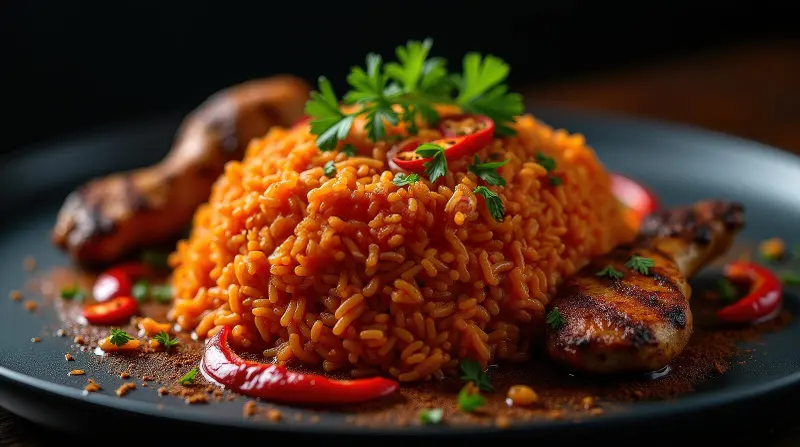
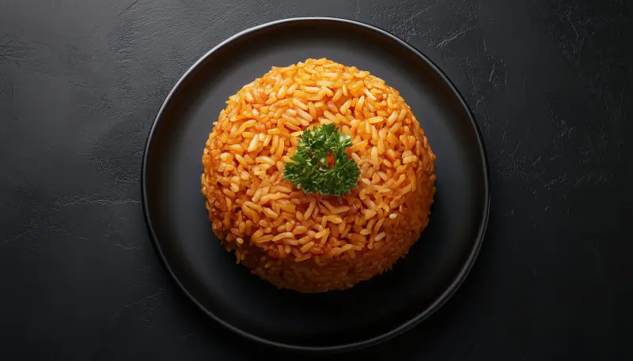

Jollof rice is een rijstgerecht gekookt in een kruidige tomatensaus met uien, paprika’s, tomatenpuree en diverse kruiden. Het heeft een diepe rode/oranje kleur en een rijke, rokerige smaak.

Jollof rice is een rijstgerecht gekookt in een kruidige tomatensaus met uien, paprika’s, tomatenpuree en diverse kruiden. Het heeft een diepe rode/oranje kleur en een rijke, rokerige smaak.
Jollof rice is een populair West-Afrikaans gerecht dat in veel landen wordt gegeten, zoals Nigeria, Ghana en Senegal. Het is een kruidige rijstschotel die wordt gekookt in een saus van tomaten, paprika, uien en kruiden. De rijst krijgt daardoor een rode of oranje kleur en een rijke, hartige smaak.
Het gerecht wordt vaak geserveerd met kip, vis of rundvlees, en soms met gebakken banaan of salade erbij. Elk land heeft zijn eigen manier om jollof te maken: de Nigeriaanse versie is meestal pittiger, terwijl de Ghanese variant een iets mildere smaak heeft. In Senegal heet het gerecht thieboudienne en bevat het vaak vis en groenten.
Jollof rice wordt vaak gegeten bij feesten, bruiloften en fa@miliegelegenheden. Het is een gerecht dat mensen samenbrengt en symbool staat voor gastvrijheid en trots in de West-Afrikaanse keuken.
